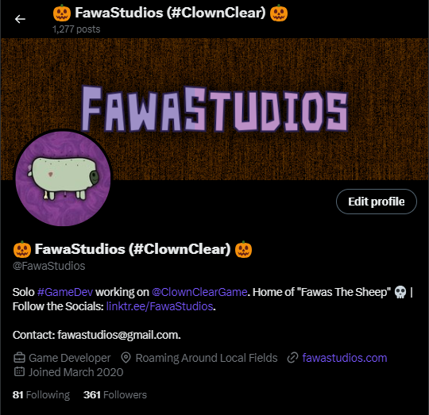
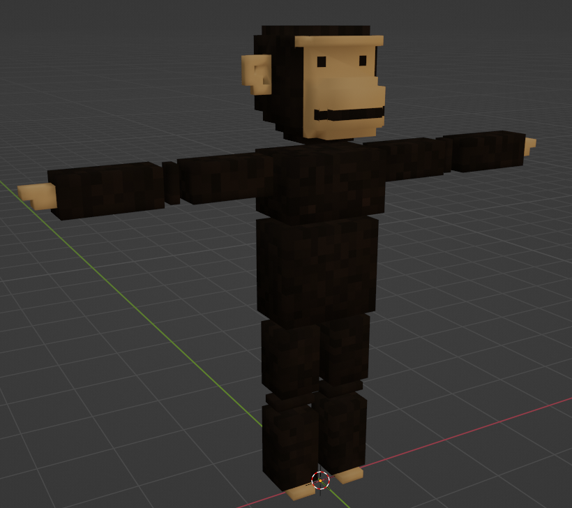
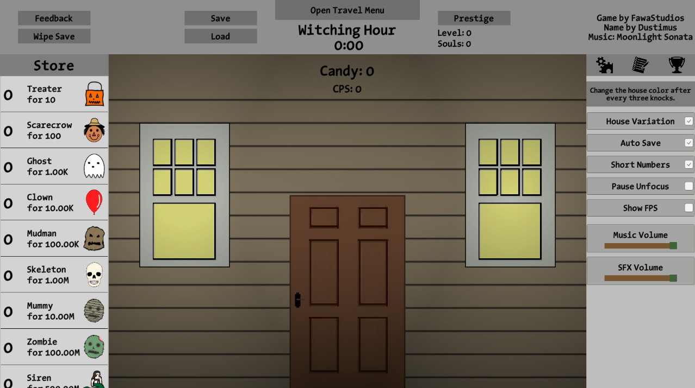

News & Dev | September 16, 2023 (11:11 AM EST)
Fawas Halloween (And More)
Welcome back to another exciting, enticing, enthralling, very cool, awesome, unbearably epic, FawaStudios blog post. Today I’ll be giving some quick updates on Click or Treat 2 and Chimp Chowder (both of which I plan to release soon).
FawaStudios
I’m finally rolling out my new and improved FawaStudios Halloween branding, I know I’m late (Spook season starts on September 1st) but as long as it’s before actual October I’m happy. There have also been some minor changes to the FawaStudios website, which I plan on doing more work on in the near future.
Clown Clear
Currently most of the work on Clown Clear is gathering reference images for the character sculpts / models. I’ll also be working on maps more soon, but I’m taking a temporary break to focus on getting Chimp Chowder & Click or Treat 2 out.
Chimp Chowder
If you keep up with the Twitter page or the Discord server, you’ll have learned that Chimp Chowder development is back in full swing (or half swing… probably quarter swing, either way it’s in swing). I’ve been deciding on a new art style that remains relatively the same but with smoother edges, and optimization for the finalized chimp model is almost done.
I still need to rewrite some scripts, make my new skin manager system, and possibly add powerups (something along those lines, the game’s a little bland at the moment). Once that’s done, boom bada bing, I am officially a certified Steam game developer.
Click or Treat 2
Most of the work on Click or Treat 2 so far has been backend optimizations and working on improving graphics and adding visual effects, but I’ll start working heavily on the bigger mechanics like explorable buildings soon if I can make sure I’ll have enough time.

(image of some of the UI changes, still not complete)
Building Problems
Currently I’m at a crossroads on how I want the buildings to work. My first idea was a (or multiple) front facing room view(s) for each building, kind of like the Five Nights At Freddy’s screens, and you can click on certain objects in the view for whatever purpose I decide to give them.
The other idea is to just make a simple top-down movement system, and have each building be kind of Binding Of Isaac-ish without all the hardcore RPG stuff. This might allow for a more advanced custom decoration system, more variation, might be easier to implement.
If you have any opinions, feel free to give them to me on Twitter or my Discord server, all feedback is helpful & appreciated.
Conclusion
Since this is my favorite season I plan on doing a lot, expect Click or Treat 2 (once again might just be an update) at the minimum, but I really do want to get Chimp Chowder out before the end of October. Also maybe look out for those Clown Clear character descriptions, and more map information if multitasking doesn’t kill me. Thank you, and buh-bye.